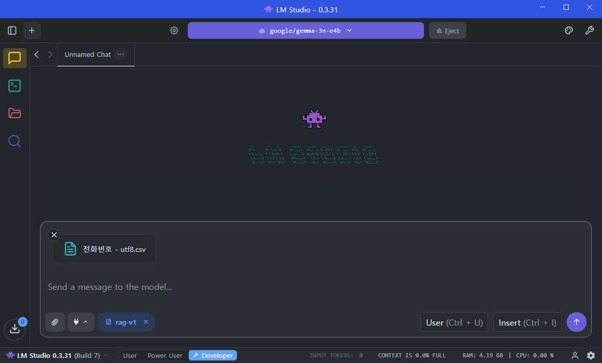
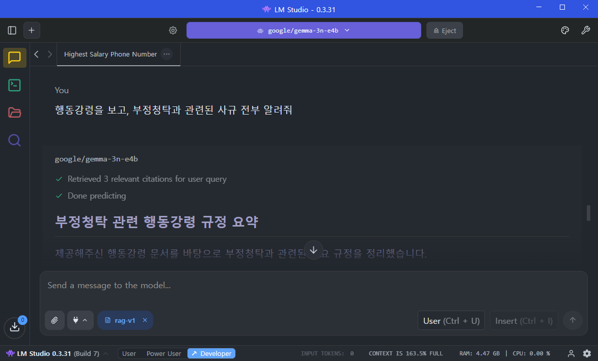

LLM RAG 실습

LM Studio 실행 후 클립 모양의 "attach a file" 버튼을 누른다.

파일 첨부를 통해 RAG를 하는 방법에 대한 설명이 나온다.
- 파일은 최대 5개까지, 합쳐서 최대 30메가까지 한 번에 첨부할 수 있음.
- 지원하는 파일 포맷은 PDF, DOCX, TXT, CSV.
- LLM에 질문할 때, 어떤 파일을 이용해서 답해야 하는지 최대한 상세하게 질의할 것. 예를 들면, "전화번호부에서 OOO 해 줘", "공사 사규에서 OOO 해 줘"와 같은 식
- 다양하게 질문해서 어떻게 질문해야 가장 좋은 답이 나오는지 확인할 것.
여기서 "Upload File" 버튼을 누르고 파일을 찾아 파일을 첨부한다.
실습 1 - 전화번호부(CSV) 파일 내용 질의


여기서는 전화번호부-utf8.csv 파일을 첨부했다.

-
질문: 전화번호에서 연봉이 가장 큰 사람의 연봉과 전화번호 알려줘
-
답: 전화번호 데이터에서 연봉이 가장 큰 사람은 한지적이고, 연봉은 10000만원입니다. 전화번호는 010-1234-6666 입니다.
실습 2 - PDF 파일 내용 질의
행동강령.pdf 파일을 첨부한다.

관련 사규 질의
- 질문: 행동강령을 보고, 부정청탁과 관련된 사규 전부 알려줘
- 답
부정청탁 관련 행동강령 규정 요약 제공해주신 행동강령 문서를 바탕으로 부정청탁과 관련된 주요 규정을 정리했습니다. 1. 청렴서약 (제64조) 임직원은 청렴하고 공정한 직무수행과 국민으로부터 신뢰받는 공직자상 정립을 위해 청렴서약을 실시해야 합니다. 청렴서약 및 부정청탁금지법 준수 서약은 신규 임용 시 별지 제22호, 23호 서식에 따라 실시해야 합니다. 2. 청렴지킴이 (제65조) 공사의 주요 업무(지적측량, 국토정보관리, 계약 분야 등) 추진 과정의 공정성, 투명성, 책임성 확보 및 청렴 문화 확산을 위해 청렴지킴이를 구성합니다. 청렴지킴이는 종합 청렴도 향상, 고객 대상 청렴 활동, 부패 발생 요인 사전 예방 등을 수행하며, 반기별로 회의를 개최합니다. 3. 부정청탁 관련 상담 및 신고 (제54조, 55조) 금품 등 수수, 외부 강의 사례금 수수, 경조사 통지, 감독기관 부당한 요구 등 행동강령 위반 여부가 불명확한 경우 행동강령 책임자와 상담 후 처리해야 합니다. 행동강령 책임자는 상담 내용 관리를 위한 별지 제17호 서식에 따라 기록해야 합니다. 임직원이 강령 위반 사실을 알게 된 경우, 행동강령 책임자, 소속기관의 장 또는 국민권익위원회에 신고할 수 있습니다. (별지 제18호 서식 사용) 신고자의 신분은 비밀을 보장하며, 신고에 따른 어떠한 차별이나 불이익도 받지 않도록 보호해야 합니다. 4. 부당한 요구 관련 (별지 제16호, 15호) 부정청탁으로 판단되는 부당한 요구 발생 시, 관련 내용(요구 내용, 부당하다고 판단한 이유 등)을 신고할 수 있습니다. 신고는 별지 제16호, 15호 서식에 따라 진행합니다. 참고: 위에 언급된 규정들은 부정청탁과 관련된 주요 내용을 담고 있으며, 전체 행동강령 문서에는 더 자세한 내용이 포함되어 있을 수 있습니다. 더 궁금한 점이나 특정 부분에 대한 추가 정보가 필요하시면 언제든지 문의해주세요.
문제 생성

-
질문: 행동강령의 내용으로 중요한 내용만 추려서 문제를 만들고 싶어. 4지선다형으로 10문제와 답 만들어줘
-
답
행동강령 4지선다형 문제 (총 10문제) 다음은 제공된 행동강령 문서를 바탕으로 구성한 4지선다형 문제입니다. 각 문제에 대한 정답은 괄호 안에 표시되어 있습니다. 1. 임직원이 경조사 관련 금품을 받을 수 있는 금액은 다음 중 얼마까지인가? ① 5만원 이하 ② 10만원 이하 (단, 특정 조건 충족 시) (가) ③ 30만원 이하 ④ 5만원 초과 2. 감독기관 임직원이 피감기관으로부터 부당한 요구를 받을 경우, 어떤 요구를 하지 않아야 하는가? ① 법령에 근거 없는 금품 제공 요구 ② 정상적인 예우의 요구 ③ 업무 효율성을 높이기 위한 협조 요청 ④ 기관장의 개인적인 친목 도모를 위한 선물 요구 3. 임직원 간의 관계에서 지켜야 할 가장 중요한 태도는 무엇인가? ① 상사의 명령에 절대적으로 복종한다. ② 서로 존중하고, 의견을 경청하며 격려한다. (가) ③ 직장 내 파벌을 형성하여 영향력을 행사한다. ④ 비판적인 의견은 무시하고, 맹목적으로 따른다. 4. 사조직 결성은 다음 중 어떤 이유로 금지되는가? ① 업무 효율성 증진을 위해 ② 공정한 업무 수행을 저해할 수 있기 때문에 (가) ③ 조직 문화 활성화를 위해 ④ 직원들의 친목 도모를 위해 5. 임직원이 다른 임직원에게 해서는 안 되는 행위는 다음 중 무엇인가? ① 상호 간의 의견을 존중하고 격려한다. ② 성적 유혹이나 성적 수치심을 유발시키는 행위를 하지 않는다. (가) ③ 회식 자리에서 분위기를 즐기도록 권유한다. ④ 업무 관련 정보를 공유한다. 6. 임직원은 자기계발을 통해 어떤 인재상을 추구해야 하는가? ① 개인적인 욕심 충족 ② 국제화·개방화 시대에 바람직한 인재상에 부합되도록 (가) ③ 조직의 전통 유지 ④ 업무 능력 향상만 추구 7. 임직원이 고객을 대할 때 가장 중요하게 생각해야 할 것은 무엇인가? ① 회사의 이익 증진 ② 고객을 존중하고 고객의 입장에서 생각하는 것 (가) ③ 고객에게 불리한 정보 제공 ④ 고객과의 관계는 형식적으로 처리 8. 임직원이 고객의 이익을 보호하기 위해 지켜야 할 사항은 무엇인가? ① 회사 재산보다 고객 자산을 더 소중하게 보호한다. (가) ② 비도덕적인 행위로 고객의 이익을 침해하지 않는다. ③ 고객에게 불필요한 정보 제공 ④ 고객 정보를 다른 사람에게 유출 9. 직무 수행 시 지연·혈연·학연 등을 이유로 특혜를 주거나 차별하는 것은 어떤 이유로 금지되는가? ① 조직의 안정성 유지 ② 공정한 경쟁을 저해하고 불이익을 초래할 수 있기 때문에 (가) ③ 개인적인 관계 활용 ④ 업무 효율성 증진 10. 고객의 의견과 제안사항은 어떻게 처리해야 하는가? ① 무시한다. ② 경청하고 겸허하게 수용하며 신속하고 공정하게 처리한다. (가) ③ 긍정적인 의견만 수용한다. ④ 고객에게 불리한 내용만 전달한다.** 정답: (각 문제 옆에 표시됨) 참고: 위 문제는 제공된 문서를 토대로 작성되었으며, 실제 행동강령의 모든 내용을 포함하지 않을 수 있습니다. 더 자세한 내용은 전체 행동강령 문서를 참고하시기 바랍니다.